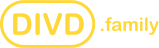

01 / 07
DIVD
The non-profit research institute run by volunteers and a network of like-minded organisations.
- Project Energie 2025 / 2026
- DIVD.community project
Latest updateLoading news...

One mission. Many paths.
Many organisations carry the DIVD name and contribute to our mission in their own unique way. Together, we form the DIVD.family.
Explore the familyThe ecosystem
From security research to education, funding and opportunity, each member adds a different strength to the network.
The non-profit research institute run by volunteers and a network of like-minded organisations.
A global volunteer-led nonprofit enhancing security by addressing overlooked vulnerabilities.
Empowering ethical hackers and cybersecurity enthusiasts through skills and ethical awareness.
Supporting public welfare projects and initiatives that help people develop their talents.
Raising funds and creating opportunities for ideas that make the digital world safer.
Connecting students, professionals and organisations to bridge education and the labour market.
A place for the people around DIVD to connect, share knowledge and make an impact together.